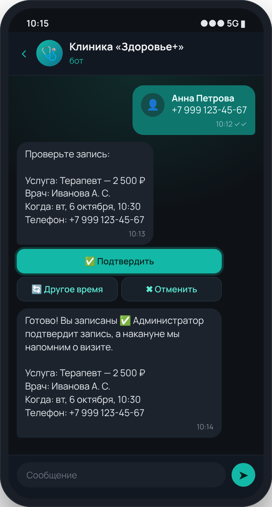
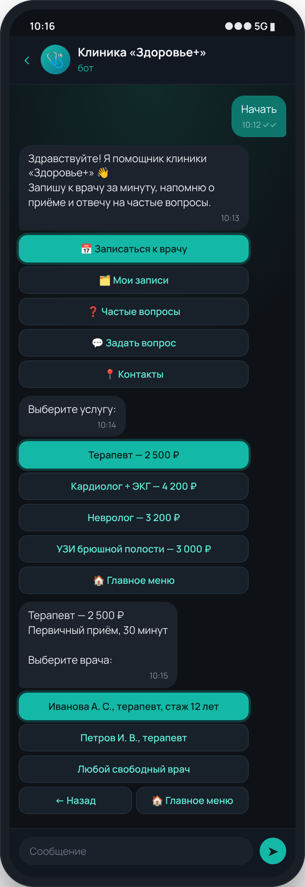
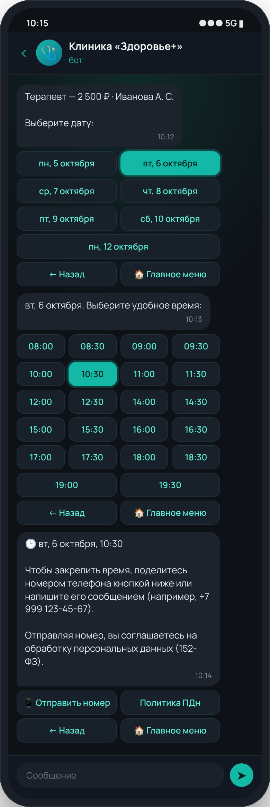
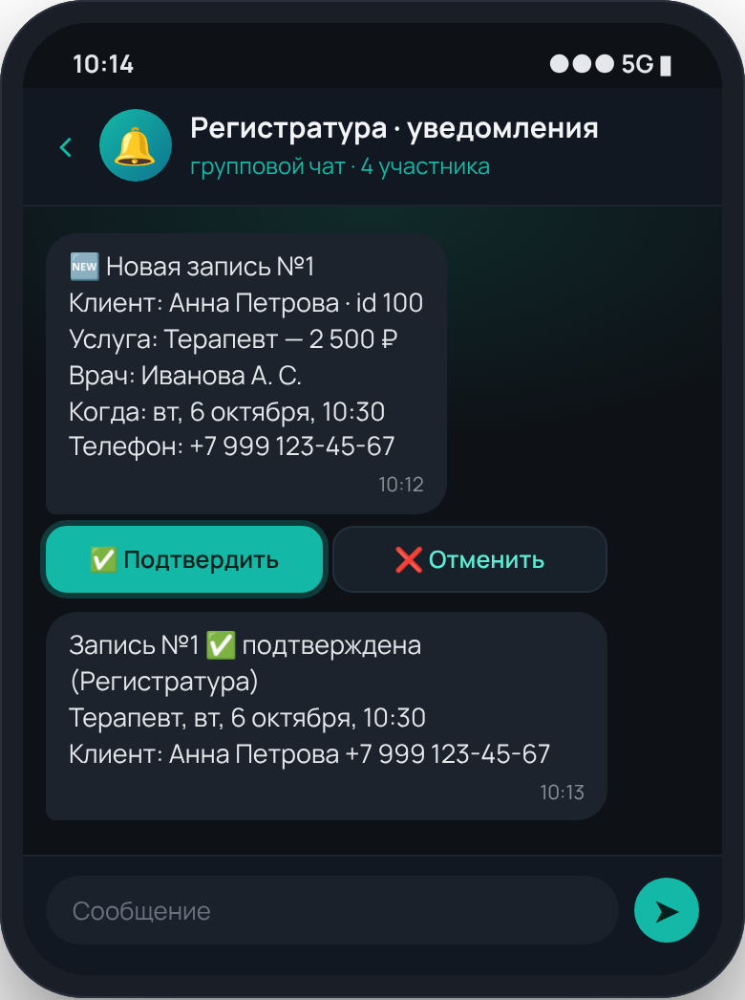
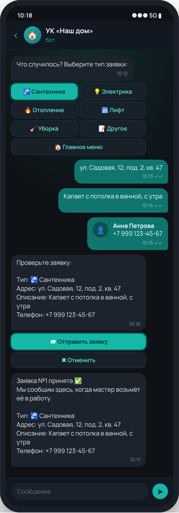

🩺
Клиники и стоматологии
- Запись: услуга → врач или «любой свободный» → дата → время
- Учёт расписания, перерывов, длительности приёма
- «Мои записи» с отменой, подтверждение регистратурой
- Согласие на обработку ПДн (152-ФЗ), FAQ по подготовке
Разработка на официальном API MAX
Онлайн-запись, приём заявок, показания счётчиков, ответы на частые вопросы — клиенты решают всё в мессенджере, а администратор получает готовые заявки в рабочий чат. Перенесу и ваш бот из Telegram.

Бот создаётся на верифицированном профиле вашей организации на платформе MAX для партнёров. Клиенты видят официальный бот компании, доступ и токен остаются у вас.
Код на Python под ваши процессы: расписание врачей, перерывы, длительность услуг, проверка показаний, роли администраторов. Без абонентской платы за конструктор.
Фиксированная смета до старта, договор, оплата частями, чек самозанятого. Исходный код и инструкция по запуску передаются вам.
Готовые модули, которые настраиваются под вашу компанию, а не пишутся с нуля, — поэтому быстро и недорого.
Это не картинки из фотошопа: экраны сняты с работающего шаблона бота. Пациент жмёт кнопки, номер телефона отправляется одним касанием, а регистратура сразу видит запись.




Цена фиксируется в смете до начала работ. Оплата: 50% на старте, 50% после запуска.
Бот-визитка и приём заявок
Клиники, салоны, управляющие компании
Перенос из Telegram и связка с CRM
Хостинг (VPS или облако) оплачивается заказчиком напрямую провайдеру. Поддержка после гарантии — по договорённости.
Юрлица, ИП и самозанятые — резиденты РФ. Профиль организации верифицируется на платформе MAX для партнёров (через Госуслуги или банковский сервис), после этого создаётся бот и проходит модерацию. Я помогаю на каждом шаге.
Да. Логику, тексты, кнопки и интеграции переношу на API MAX. Подписчики не переносятся автоматически, поэтому делаем рассылку в Telegram-боте со ссылкой на новый бот в MAX. Старый бот может работать параллельно.
Бот спрашивает согласие и даёт ссылку на вашу политику обработки ПДн. Данные хранятся на вашем сервере, в вашей базе или CRM. В сообщениях не храним медицинскую информацию сверх необходимого для записи.
Нет, бот станет ещё одним каналом: записи и заявки можно отправлять в вашу систему по API. Интеграция оценивается отдельно, после того как я посмотрю документацию системы.
Доступ к профилю компании на платформе MAX (или токен бота), список услуг и специалистов, расписание, тексты ответов на частые вопросы и 1–2 созвона.
Напишите, чем занимается компания и какие задачи хотите отдать боту. Отвечу в течение рабочего дня и пришлю расчёт.
Владимир — Python-разработчик, боты и веб-сервисы. Москва, работаю удалённо по всей России. Самозанятый: договор и чек.